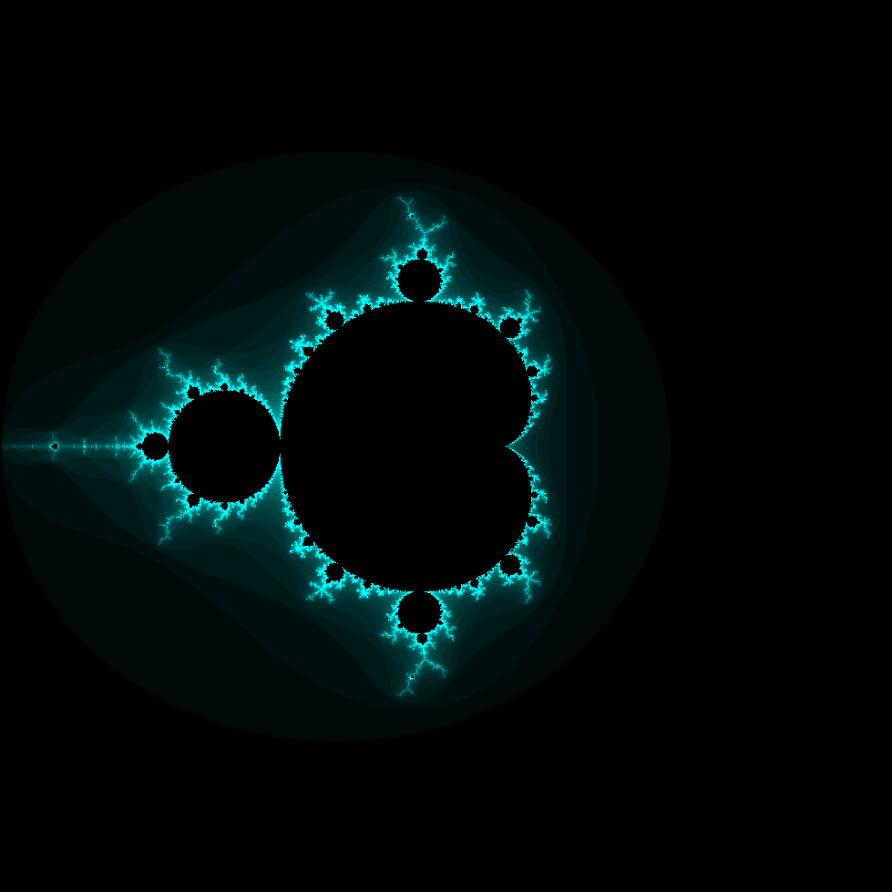
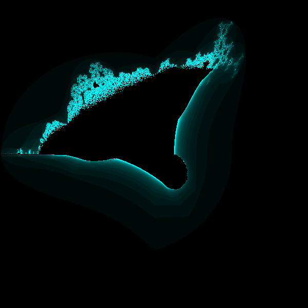

Last year, I wrote about having read a book about HTML5 called Programming HTML5 Applications, by Zachary Kessin. I panned this book in my review for having incomplete, and sometimes wrong information. Recently, I have been reading a book called HTML5 for Masterminds, by J D Gauchat, which covers many HTML5 topics in much more depth.
However, there was one example given in Zachary Kessin's book that really caught my attention: a demo that draws a plot of the Mandelbrot Fractal. I followed along with the demo, and soon, it really started growing on me. I found it very intriguing, and I decided that I wanted to create my own general-purpose fractal-drawing program.
The biggest inaccuracy that I've stumbled across in Kessin's book is that the way he describes how to draw the fractal is very slow! This is totally unacceptable because the demo is supposed to show how to efficiently perform computations with web workers. Following along with his example, once the color of each pixel on the canvas is determined, each pixel is colored using the fillRect method. If you have any interest in drawing a plot from mathematical calculations, I suggest that you look at this question on StackOverflow.
In order to introduce my new program, HTML5 Fractal Playground, I would like to introduce you to a few mathematical concepts that it uses. First of all, if you're reading this, you're likely familiar with imaginary and complex numbers. The plots generated by my program show the interior points of a fractal defined by an iterating function. The points outside the interior are colored based on how quickly they "escape". For example, the iterating function for the Mandelbrot Fractal is zn = zn - 12 + z0. We say that a point is a member of the Mandelbrot set and color it black if zn remains bounded for all values of n. In practice, there is a limit to the number of iterations we can compute. For points outside the Mandelbrot set, we choose a color based on how many iterations we must compute to ascertain that a point escapes. In the case of the Mandelbrot set, it is sufficient to check that if zn has magnitude greater than 2 for any n, the point escapes. This is one of many, many ways of coloring a Mandelbrot fractal plot; more are given in the Wikipedia article.
It is not that difficult to write a program that will do these computations and draw an image, but I wanted to do more than that.
I wanted to write a program that will draw a fractal imagine defined by *any* iterating function. In practice, my program will draw many different fractal images, but I haven't yet figured out how to make it work with iterating functions that use transcendental functions, so that's one limitation I'd like to overcome.
As far as HTML5 goes, the major features of HTML5 that HTML5 Fractal Playground uses are web workers and the canvas tag. I also make use of asm.js, a technology that is currently only supported in recent releases of Firefox. asm.js uses odd annotations on Javascript code in order to compile that code to machine language. This results in a huge performance increase, while maintaining backwards compatibility with browsers that don't implement asm.js. What this means to you is that if you draw a huge plot with my program, it will work faster if you use Firefox. Up until recently, there was an incredible asm.js graphics demo called the Epic Citadel. Unfortunately, it appears to have been taken down from the public internet. Hopefully, it will become available again.
The primary limitation that I keep bumping into is with the precision of the mathematics. Javascript uses a single number type, IEEE 754 double precision floating point. That means that as you try to "zoom in" on the plot, you will eventually see distortion and pixelation. I have been thinking about how it may be possible to use the HTML5 typed arrays to do higher-precision mathematics, but that would be complex, indeed! I want to do it some day, but if I kept adding one more feature, I'd never have anything to release. When I finally make it happen, I look forward to making videos like this one.
This code has all been uploaded to GitHub for your reading pleasure: https://github.com/VivianRiver/HTML5_Fractal_Playground. I would also like you to know that all the code in the program is client-side HTML5 Javascript; nothing is sent back and forth from the server as the program runs.
The program allows for you to specify a number of parameters for how the plot gets drawn, but the main feature is that you can edit the Javascript code in a web-based text editor to change the fractal image that is drawn. For example, if you modify the code so that in the iterating function, instead of a square function, you substitute a function that uses the absolute values for the real and imaginary parts and then squares that, you can draw the Burning Ships Fractal. If you replace the square function with a function that computes the square of the complex conjugate, you can draw the Mandelbar Fractal.
I would encourage you to try tinkering with the code a bit. It's a bit tricky because it's been annotated to work with asm.js. Don't worry about this if you make changes to the code. As long as the code is valid, the worst that can happen is that asm.js won't be able to compile it, so you'll still get a fractal plot, but it will be slower.
Finally, I would like to dedicate my work here to the late Benoit Mandelbrot who discovered and wrote about this wonderful world of iterating function generated fractals!
The Mandelbrot Fractal:

The Mandelbar Fractal:
The Burning Ships Fractal:
